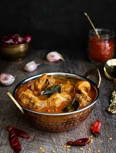
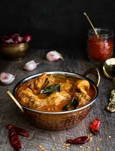

CHICKEN

 

ESTIMATED CALORIES INTAKE:
300 Cal
INGREDIENTS:
- Chicken
- Salt
- Chilli powder
- baby spinach
- Pepper to Taste
- Black sesame
RECIPE TO MAKE CHICKEN CURRY:
- Spread mango puree on plate.
- Heat ghee, neutral oil or clarified butter in a pot or a saucepan.
- When the oil is medium-high heat, add the cumin seeds, and when they start to crackle, add green chilis and fry for a few seconds. You want the heat high enough for it to crackle, but still avoid burning the spices.
- Add the cinnamon stick, peppercorns, cardamom and cloves and fry for another 20 seconds.
- Now it's time to add in the rinsed and soaked rice, 2 cups of new water, salt and the bay leaf. Have it up to a boil and then down to a simmer, covered, until all the water is absorbed (varies from rice to rice, check the packaging). Around 15-20 minutes.
- Remove from heat and let it rest for 5 minutes, still covered. Remove cinnamon stick, bay leaf and cloves. Take out peppercorns if you find them, but if not that is also ok. Fluff the rice with a fork, garnish with cilantro and it's ready to serve!